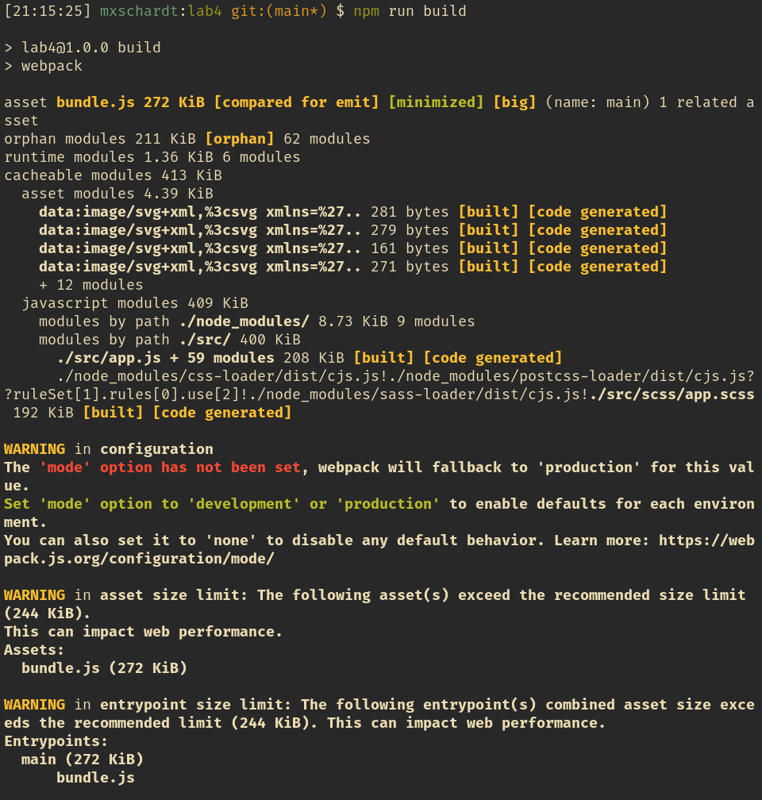

Создаем директорию и инициализируем npm, чтобы создать
package.json и устанавливаем webpack как
локальную зависимость.
$ npm init -y
$ npm i webpack --save-dev
Разделим исходный код и готовый упакованный код сайта:
$ mkdir dist src
$ touch dist/index.html src/app.js
Установим Bootstrap и все сопутствующие зависимости
$ npm install bootstrap jquery popper.js --save
$ npm install autoprefixer css-loader node-sass postcss-loader sass-loader style-loader --save-dev
Создаем файл конфигурации webpack
$ touch webpack.config.js
Заполним его следующим содержимым:
const path = require("path")
module.exports = {
entry: "./src/app.js",
output: {
filename: "bundle.js",
path: path.resolve(__dirname, "dist"),
},
module: {
rules: [
{
test: /\.(scss)$/,
use: [
{
loader: "style-loader",
},
{
// Interprets `@import` and `url()` like `import/require()` and will resolve them
loader: "css-loader",
},
{
// Loader for webpack to process CSS with PostCSS
loader: "postcss-loader",
options: {
postcssOptions: {
pluguns: ["autoprefixer"],
},
},
},
{
// Loads a SASS/SCSS file and compiles it to CSS
loader: "sass-loader",
},
],
},
],
},
}
Создадим файл Syntactically Awesome Style Sheets (scss) и импортируем bootstrap
$ mkdir src/scss/
$ touch app.scss
src/scss/app.scss
@import "~bootstrap/scss/bootstrap";
Импортируем файлы Bootstrap и scss в файле /src/app.js
import 'bootstrap';
import './scss/app.scss';
Добавим следующую строчку в package.json в разделе
scripts
"build": "webpack",
И создадим начальную страницу сайта /dist/index.html
<!DOCTYPE html>
<html>
<head>
<meta charset="utf-8" />
<meta
name="viewport"
content="width=device-width, initial-scale=1, shrink-to-fit=no"
/>
<title></title>
<script src="./bundle.js"></script>
</head>
<body>
<h1 class="display-1">Hello World</h1>
</body>
</html>
Начнем сборку нашего сайта
$ npm run build
При сборке появляется множество некритических ошибок, но сайт собирается.
